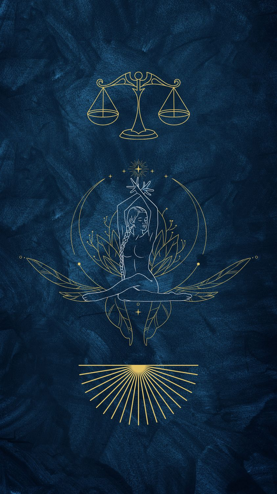

Terazi
23 Eylül – 22 Ekim · Element: Hava · Yönetici: Venüs

Genel Profil
Terazi; denge, adalet ve estetik arayışıdır. İlişkilerde uyum kurar, arabulucudur.
Karar verme süreci uzayabilir; net sınırlar belirlemek rahatlatır.
Güçlü Yönler
- Diplomasi
- Adalet duygusu
- İletişim
- Estetik bakış
Zorlayıcı Yönler
- Kararsızlık
- Onay ihtiyacı
- Çatışmadan kaçınma
- Erteleme
Aşk
Partnerlikle büyür; karşılıklı saygı ve zarafet önemlidir.
Kariyer
Hukuk, tasarım, danışmanlık, İK, satış ve ilişki yönetimi.
İpucu
Bugün “evet/hayır” netliği seç: tek bir karar ver ve ilerle.